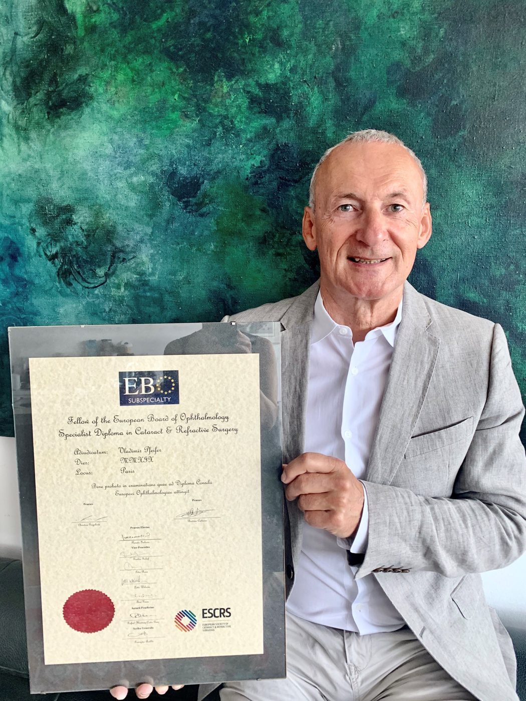

Primerljivi z najboljšimi centri na svetu
Center je ustanovil in ga vodi prim. mag. Vladimir Pfeifer. Delamo timsko in vlagamo v vrhunsko tehnologijo ter stalno izobraževanje sester in zdravnikov.

Prim. mag. Vladimir Pfeifer
Svetovno priznani očesni kirurg, vabljeni predavatelj na kongresih vseh petih celin, učitelj in voditelj delavnic moderne tehnike operacije sive mrene v evropskem in ameriškem združenju za kataraktno in refraktivno kirurgijo.
Naši zdravniki
Oftalmologi so izučeni za celostno obravnavo oči, od predpisa očal do zelo natančnih operacij. Mnogi so vključeni tudi v znanstveno raziskovanje.
- Prim. mag. Vladimir PfeiferFEBOS-CR, spec. oftalmolog kirurg
- Marija Ana Schwarzbartl Pfeiferdr. med., skrbnica čakalne liste
- Nenad Špičkadr. med.
- Doc. dr. Manca Tekavčič Pompedr. med., otroške očesne bolezni
- Asist. Mateja Najidr. med., mrežnica in plastična kirurgija
- Alja Črnej Khoueirdr. med.
- Ana Pajtler Rošardr. med., vitreoretinalna kirurgija
- Branka Stirn Kranjcdr. med., otroške očesne bolezni
- Andreja Veselicadr. med.
Ambulante
Pregled lahko opravite v desetih subspecialističnih ambulantah.
Smo akreditirani
S pridobitvijo mednarodne akreditacije smo se uvrstili med najprestižnejše očesne kirurške centre na svetu.
Akreditacija American Accreditation Commission International po International Accreditation Standards for Healthcare Organisations, certifikat ISO 9001:2008 in EN 15224 za specialistične kirurške in ambulantne storitve v oftalmologiji.